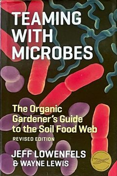
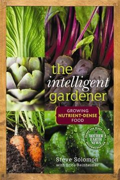
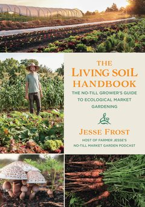
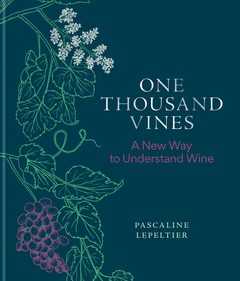
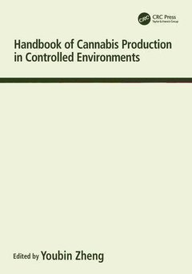

Teaming with Microbes
An accessible introduction to the soil food web and how bacteria, fungi and other soil life feed plants. The first in a series that goes on to cover nutrients, fungi and bacteria.
Dive into terroir
Reading, listening and viewing that engages with outdoor cultivation.

An accessible introduction to the soil food web and how bacteria, fungi and other soil life feed plants. The first in a series that goes on to cover nutrients, fungi and bacteria.

A practical method for reading a soil test and remineralising soil with natural materials, for growers who want to understand what their soil is missing.

A practical guide to no-till growing that builds soil health through compost, mulch and cover crops. Written for market gardeners, but the lessons carry across to any in-ground crop.

A sommelier's deep dive into wine through the vineyard: farming practices, grape varieties and terroir. A useful lens for thinking about place and provenance in any crop.

An academic handbook of evidence-based horticultural research. It focuses on indoor and greenhouse growing, but much of the plant physiology applies outdoors.
Why growers should match genetics to local climate rather than to imported reputations, and what Australia's range of climates means for deciding what to plant where.
Gabriel draws on the wine trade's structured approach to assessment (balance, length, intensity and complexity) to propose a shared sensory language built on freshness, loudness and complexity.
A roundtable with Dr Colin P. Nuckolls, Alec Koudijs and Tom Forrest on sun-grown cultivation, terroir and plant classification, and whether the industry's current measures overlook what place and farming practice contribute.
Tad Hussey and soil consultant Bryant Mason cover the fundamentals of soil science, soil testing and crop nutrition.
Sara Payan and farmer Tina Gordon on sun-grown cultivation, working with seasons and natural cycles, and the place of women in farming.
Scott Vasterling of Humboldt Family Farms on his path into farming and his commitment to sun-grown cultivation.
Follows two farming families, one making wine in France and one growing cannabis in Humboldt County, California, and how both rely on generations of knowledge of their soil, climate and land.
A portrait of Frenchy Cannoli, the self-taught artisan and educator whose lifelong advocacy for terroir, traditional craft and respect for the plant and its place shaped how a generation of growers think about provenance.
Casey O'Neill of Happy Day Farms and Derek Gilman discuss the variables behind terroir (climate, soil, genetics and the grower's relationship with the plants) and rank them by importance.
Derek Gilman and cultivator Swami Chaitanya draw on the French wine model to explain terroir as climate, region, soil, culture and cultivation method, and why appellations matter for regional growers.
Explains California's SB 67 (2020), which allows cannabis grown in a defined region to carry an appellation of origin under the state's Department of Food and Agriculture, and draws the parallel with wine regions.
Kevin Jodrey hosts evolutionary biologist Mowgli Holmes, Teaming with Microbes author Jeff Lowenfels and Justin Calvino of the Mendocino Appellations Project in a conversation on plant genetics, soil and appellations.
A certification for regenerative, sun-grown cannabis covering soil, farming practices and labour standards, with profiles of certified farms.
A certification program for organic, regenerative and sustainable farming practices in cannabis.
Dr Elaine Ingham's education program, teaching farmers and land stewards the fundamentals of the Soil Food Web approach to managing soil biology.
A policy organisation working on rural economic development in cannabis-growing regions and on legally defensible geographic indication systems for cannabis.
The largest body of regenerative farming case studies in Australia, documenting how farmers are rebuilding soils and landscapes, browsable by state and enterprise.
The Commonwealth regulator for medicinal cannabis licences covering cultivation, production of harvested plant material and manufacture, plus the permits and guidance that sit alongside them.
The TGA's guidance on what counts as advertising medicinal cannabis to the public, essential reading for anyone writing or publishing about this sector.
Licensing and growing requirements for industrial hemp in Victoria. A licence is required to cultivate and process hemp for non-therapeutic purposes, and crops are sampled by an Agriculture Victoria inspector.
Funds hemp research and development, including national variety trials co-funded with Agriculture Victoria, and publishes the Australian Industrial Hemp Strategic RD&E Plan 2022–27.
A national federation of state and territory hemp associations, giving the industry a unified voice at the federal level.
A national hemp industry body representing growers, processors and researchers, and a long-standing partner of the Australian Industrial Hemp Conference.
The national peak body for the medicinal cannabis sector, formed in 2026 from the merger of the Australian Medicinal Cannabis Association and Medicinal Cannabis Industry Australia.
Brings together soil data from more than 300,000 sites, letting growers and advisers compare their soil with others in their region and track how it changes over time.
Weather observations and climate statistics from stations across Australia, with records for some sites going back to the mid-1800s, downloadable as tables, graphs and data files.
Continuous daily climate data for all of Australia from 1889 to today, with gaps filled by interpolation, ready for modelling or comparing sites.